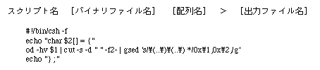

<HTML>
<HEAD>
<TITLE> Incorporating data </​​TITLE>
</HEAD><BODY>

<P> <A HREF="da2-1-2.htm"> Return to previous page </A> | <A HREF="../index.htm"> Return to menu </A> | <A HREF = "../ cd-rom / da3-1.htm"> Go to next page </A> </BR> </P> <HR>


<H2> 2-2. Data incorporation </H2>

<P>
In order to incorporate the sound data file described in the previous section into software using SGL, it is necessary to convert each binary data file into array data so that it can be read in C language.
</P>

<P>
Below is an example script that does this on UNIX. <BR>
Here, GNU sed is used.
</P>



<P>
Even in C language, it can be easily done with ANSI functions, so if your development environment is PC, make it in C language.
</P>

<P>
This completes the sound data that can be incorporated into the software. All that remains is to treat it like any other data.
</P>
<!--This document was created using BeyondPress (TM) 1.0.3-442446 .-->
<HR>
<P> <A HREF="da2-1-2.htm"> Return to previous page </A> | <A HREF="../index.htm"> Return to menu </A> | <A HREF = "../ cd-rom / da3-1.htm"> Go to next page </A> </BR> </P> </BODY> </HTML>